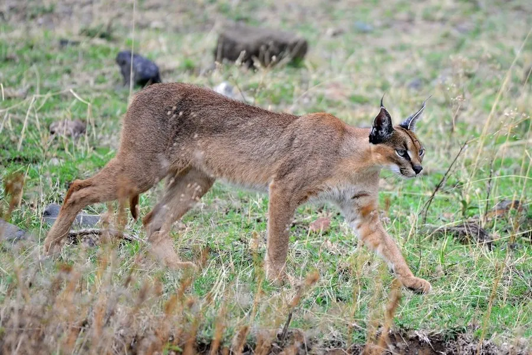

哺乳动物 · 动物界
狞猫 Caracal caracal

非洲与西亚干燥地带的中型猫科动物，耳尖长着长长的黑色簇毛，跳跃能力惊人，能在空中扑捉飞鸟。
- 分类
- 门脊索动物门纲哺乳纲目食肉目科猫科属狞猫属
- 栖息环境
- 稀树草原、半荒漠、灌丛与山地，偏好干燥开阔环境
- 地理分布
- 非洲、中东、阿拉伯半岛及中亚和南亚部分地区
- 保护级别
- IUCN 无危（LC）
物种志
狞猫体长 0.6–0.9 米，尾长 0.23–0.31 米，体重 8–18 kg，雄性大于雌性。它的被毛为沙黄至红棕色，腹部和面部颜色较浅，眼上有黑色斑纹；耳朵长而尖，耳背黑色，耳尖生有长达 5 cm 的黑色簇毛，四肢修长，后肢强壮。
狞猫分布于非洲、中东、阿拉伯半岛和中亚的干旱地区，栖息于稀树草原、半荒漠、灌丛和山地，偏好干燥开阔的环境。它是出色的跳跃猎手，能跃起约 3 米高，在空中拍落起飞或低飞的鸟类，也捕食鼠类、野兔、蜥蜴和昆虫，偶尔猎杀小型羚羊。狞猫多在夜间单独活动，领地以尿液标记；雌兽妊娠期约 68–81 天，每胎 1–6 仔。由于毛皮贸易和栖息地变化，部分地区数量下降，但在非洲南部仍较常见。
形态与习性
- 食性鸟类、鼠类、野兔、蜥蜴与昆虫，偶尔猎杀小型羚羊
- 体长0.6–0.9 m，尾长 0.23–0.31 m
- 体重8–18 kg，雄性大于雌性
- 寿命野外约 12 年
- 繁殖妊娠期约 68–81 天，每胎 1–6 仔
- 跳跃可跃起约 3 m 高，在空中捕捉飞鸟
- 耳簇毛耳尖黑色簇毛可长达 5 cm
趣味知识
- 狞猫能跃起约 3 米高，在空中拍落刚起飞的鸟类。
- 耳尖长达 5 cm 的黑色簇毛能帮助它定位猎物声音。
- 它有时被称为“沙漠猞猁”，但并非猞猁属成员。
- 狞猫在非洲南部仍较常见，常捕食农田附近的鼠类。